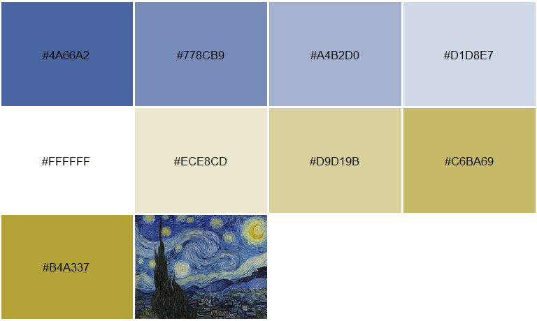
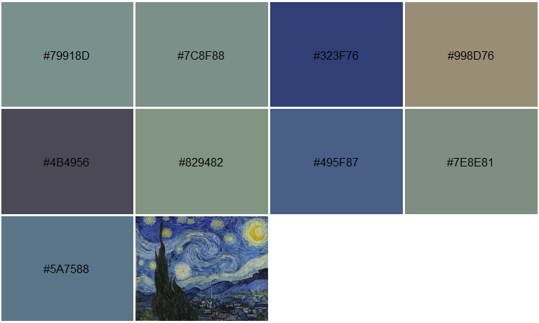
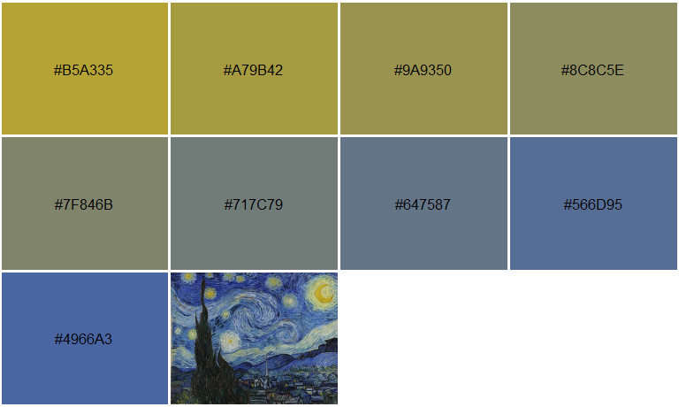
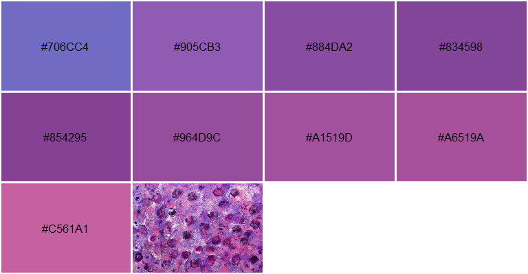
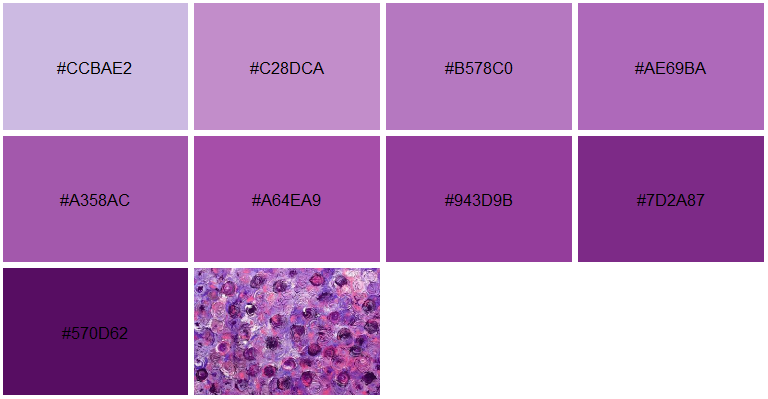
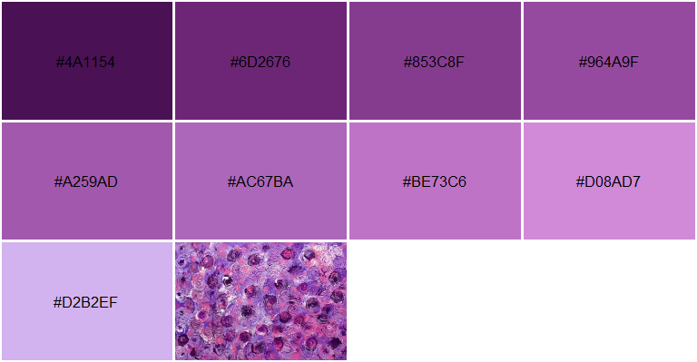
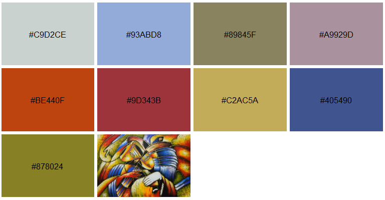
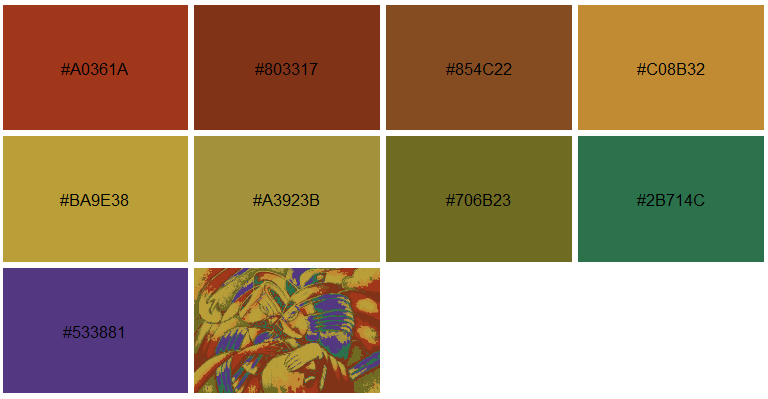

Author: Matthew Leonawicz
License: MIT


The imgpalr package makes it easy to create color palettes from image files.
- Choose the type of color palette to derive from an image: qualitative, sequential or divergent.
- Quantiles of an image color distribution can be trimmed.
- Near-black or near-white colors can be trimmed in RGB space independent of trimming brightness or saturation distributions in HSV space.
- Creating sequential palettes also offers control over the order of HSV color dimensions to sort by.
Examples
The main function is image_pal. It accepts PNG, JPG, BMP or GIF (first frame) images either from disk or URL. It returns a vector of colors defining a palette based on the image and your other function arguments. You can also set plot = TRUE to plot a preview of the palette, which includes the source image thumbnail for visual reference.
The examples below offer some typical considerations to make when deriving a color palette from an arbitrary image.
Three palette types
In this first set of examples, divergent, qualitative and sequential palettes are generated from the same image and while varying some additional settings.
library(imgpalr)
set.seed(1)
x <- paste0(system.file(package = "imgpalr"), "/",
c("blue-yellow", "purples", "colors"), ".jpg")
# Three palette types, one image
# Focus on bright, saturated colors for divergent palette:
image_pal(x[1], type = "div",
saturation = c(0.75, 1), brightness = c(0.75, 1), plot = TRUE)
# Remove colors too close to black and white for qualitative palette:
image_pal(x[1], type = "qual", bw = c(0.25, 0.9), plot = TRUE)
# A challenging sequential mapping
image_pal(x[1], type = "seq", saturation = c(0.2, 1),
brightness = c(0.5, 1), seq_by = "hsv", plot = TRUE)
A dominant hue
In this test image, hue varies over a narrow range. A sequential palette is sensible here, but not necessarily best sorted by hue. Doing so does still show a perceivable order to the colors, but it is much more difficult to discern. Sorting the palette first by saturation or brightness makes a much better sequential palette in this case.



Several hues
Using an image with several prominent hues, a divergent palette is not sensible here. A sequential is likely best sorted by hue.
Note in the second image below, you can also set quantize = TRUE to show a color-quantized reference thumbnail image based on the derived palette. This makes use of the image_quantmap function. Rather than only quantizing the image, it does so while also mapping the colors of any image to an arbitrary color palette based on nearest distances in RGB space.


Palette generation uses k-means clustering; results are different each time you call image_pal. If the palette you obtain does not feel right, even with fixed arguments you can run it again to obtain a different palette. Depending on the settings and the nature of the source image, it may change quite a bit. If you need a reproducible palette, set the seed argument. In the example above, the seed was set globally to avoid having to set it in each call to image_pal.